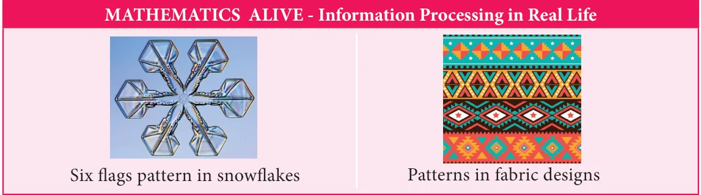

Chapter
INFORMATION PROCESSING
5
Learning Objectives
- To identify the relationship between the two variables in a pattern.
- To generalize the pattern using tabular form of representation.
- To familiarise the type of patterns in Pascal's triangle.
We can observe patterns in both nature and man made things. In nature, we can see patterns in leaves, trees, snowflakes, movements in celestial bodies and many others. In man made things, we see patterns in structures, buildings, fabric designs, tessellations and many others. This kind of repeated patterns brings happiness as well as interest in knowing more about them. It is really wonder to know all beautiful patterns are based on mathematics. Let us try to find the relationship among the pattern of shapes by representing it in the tabular form in the situations given below.
